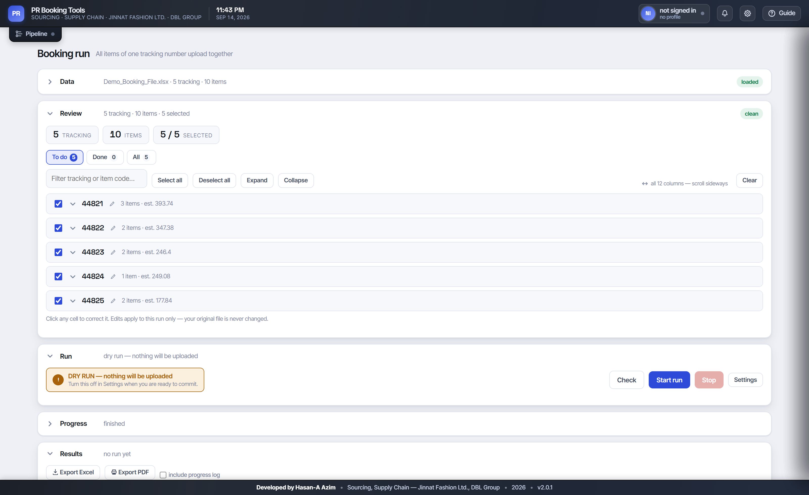
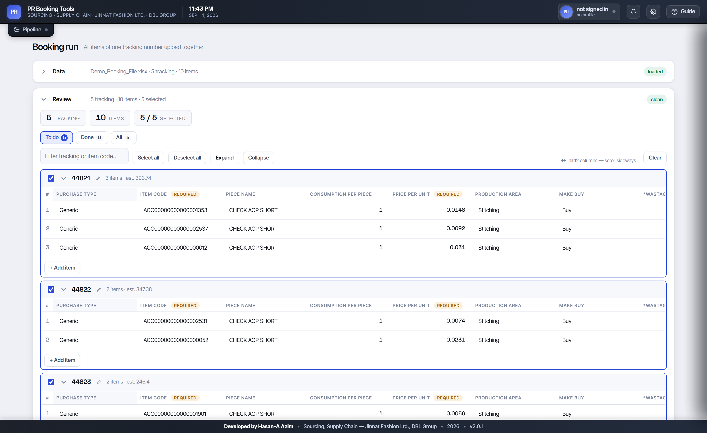
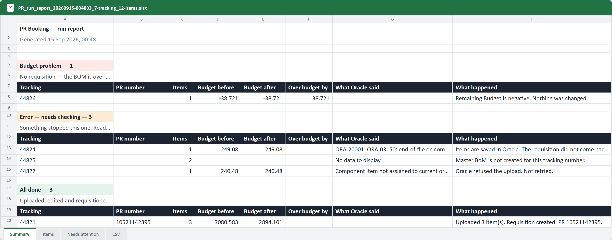
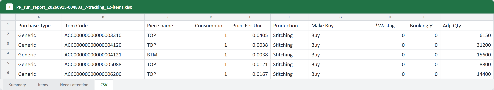

A sourcing team was raising 30–50 purchase requisitions a day by hand, through an identical click-path in Oracle EBS R12. I built the thing that does it instead — and it is now on 40+ colleagues' machines.
Not a technical problem to begin with — a time problem.
Raising a purchase requisition for accessories and trims means opening a Master BOM, reading the remaining budget, uploading the items that are not on it yet, correcting the ones that are, and then generating the requisition itself. Every step is unambiguous. Every step is the same every time. And it was taking close to 30% of a merchandiser's working day, 30–50 times over.
The process also had costs that never appeared on any report: two PCs set aside for the task, an operator to run and watch them, the data file prepared by hand each time, a separate manual check afterwards because nothing proved the work had succeeded, and — worst of all — four hand-offs every time something went wrong, each costing once in waiting and once in explaining the context again.
Automate the repetition, never the judgement. Every decision that needs a merchandiser's experience is still made by a merchandiser. What disappears is the typing, the waiting, and the re-typing.
A local web application that drives a real browser.
It runs entirely on the user's own PC. There is no server, no website to log into, and no company data leaves the machine. A merchandiser loads the file they already work in, looks it over, presses start — and goes and does something else while it signs in to Oracle, does the work, raises the requisition and writes the report.

Everything is visible and editable before anything is committed. Files arrive messy — column order, header spelling and spacing all vary — so the importer matches on meaning rather than position, and every cell can be corrected in place without touching the original file.

Three phases, and the third is the one that matters.
Opens the Master BOM, reads the remaining budget, and uploads the items that are not on it yet as a generated CSV — byte-compatible with the file Oracle already accepts: CRLF endings, no BOM, and numbers formatted the way a person would type them, never in scientific notation.
For items already on the BOM it replaces wastage, booking percentage, quantity, price and
supplier — matching columns by their exact caption with the dangerous near-miss neighbours
explicitly rejected, and comparing values as numbers rather than as text, because Oracle
re-renders 0.000003 as 0.0000030.
Before the final confirmation it checks that the selected rows are exactly the intended ones; any stray selection and it does not press the button at all. Oracle does not issue a requisition number unless it created the requisition, so that number is the only accepted proof of success. No number means no success, and it says so plainly.
This is the part I am most pleased with, and the reason it earned trust.
An automation that occasionally does the wrong thing quickly is far worse than one that occasionally asks a person to look. So the design question was never "how do I make this fast" — it was "where could this be wrong, and what should it do then?"
A dry run does the entire job — signs in, opens every BOM, reads every budget, verifies the supplier and buyer names Oracle will accept — then presses Cancel. The old question "will this work?" is answered before any risk is taken.
The remaining budget is read before any edit. If it will not carry the work, that tracking number is left completely untouched and clearly flagged. Nothing half-done.
An unverifiable write returns false. Success is read from what the server accepted, never from what the screen displays — a distinction that turned out to be the cause of four of the five hardest bugs in the project.
A dropped database link is transient and is retried up to three times. A budget refusal never is — retrying cannot create budget. Unrecognised errors are not retried at all, because repeating them risks doing real work twice.
When something looks like it is not working, suspect the check before the action. Again and again the bot was doing the right thing and mis-reading the result — a dialog reported as never opening because the detector scanned the wrong tables; a value reported as saved because the code read the rendered text rather than the stored one. Print what the page actually says before changing how it is driven.
A run nobody can read the result of has not finished.
Every run produces an Excel workbook and a PDF, named with the date, time and how much they cover, so two runs of the same afternoon never get confused. Under the old process there was no record at all unless a person made one.

The sheet that saves the most time is the last one. Everything that did not complete comes back in exactly the shape of the upload file — copy it, paste it, run it again. What used to be an afternoon of finding and re-typing is two clicks.

ACC00000000000001353 is not a number.The half of the project nobody sees, and the half that decides whether it survives.
Writing the automation was the easy part. Getting it onto forty company laptops — behind a corporate proxy, without admin rights, used by people who are not programmers and cannot be asked to debug anything — shaped almost every technical decision I made.
When something goes wrong in real use, the fix is not finished until a test contains the system's own words from that run. That is why the suite is worth its size: it is not coverage for its own sake, it is 1,149 things that can no longer come back quietly.
It is live, in daily use, and stable. Across the runs colleagues reported back, 94% completed first time; of the remainder, a meaningful share were a Master BOM that had not been created yet or a dropped network connection — neither of which is an automation problem, and both of which would have stopped a person just as surely. Whatever the reason, those tracking numbers come back on the CSV sheet ready to run again.
Adding a new colleague takes about five minutes and needs no new hardware, no purchase and no vendor.
That the hardest part of an internal tool is not building it — it is making it safe enough, and plain enough, that people trust it without being asked to. Every refusal in this system exists because I would rather it stopped and said so than guessed and was quietly wrong.
← Back to the portfolio · Get in touch — I am glad to walk through the system in detail.